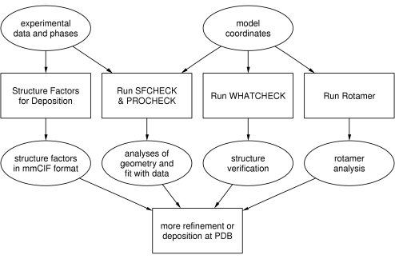

CCP4 Roadmaps
VALIDATION & DEPOSITION
VALIDATION AND DEPOSITION

diagram created with
dot
, from the
graphviz package
Other non-CCP4 programs
RCSB Validation Server
Check the format consistency of coordinates and create validation reports about a structure before deposition
Protein Data Bank at EBI
AutoDep to the Protein Data Bank
WHAT IF
Protein structure analysis
Uppsala Structural Biology Labs
Servers and services for protein validation
Further reading
PROCHECK@UCL
SFCHECK@YSBL
CCP4 Program Documentation